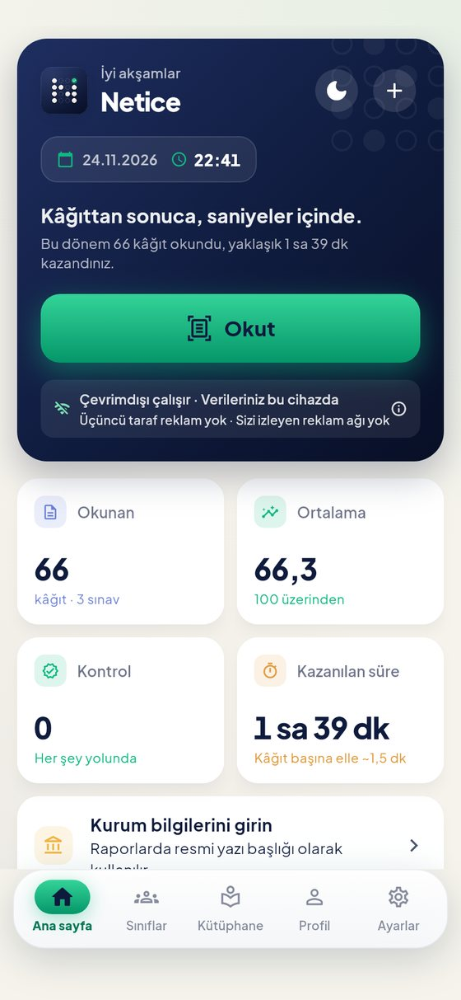
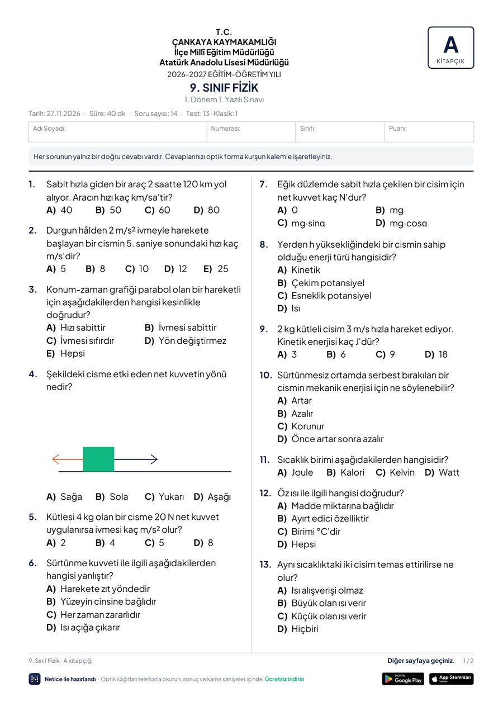
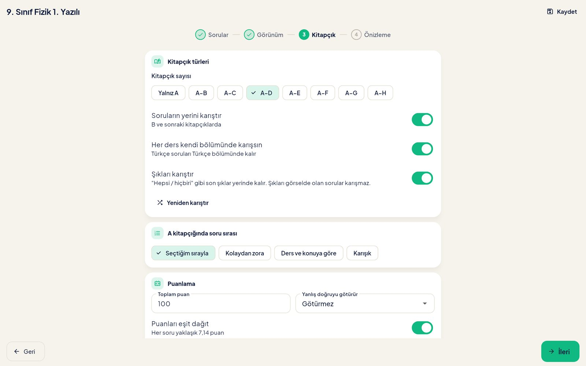
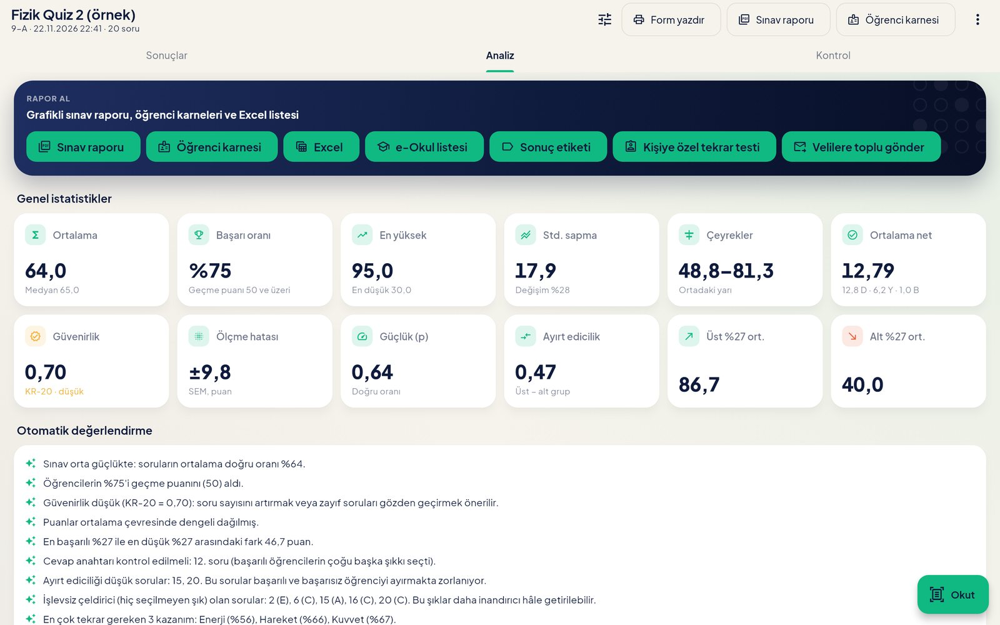
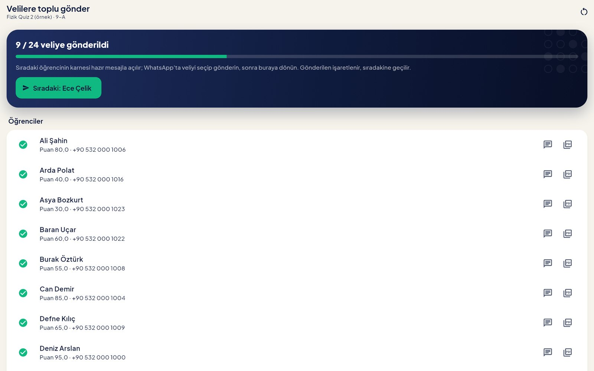
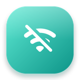
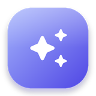

Sınavı hazırlamaktan karneyi göndermeye kadar
Netice'nin her özelliği gerçek öğretmenlerin iş akışına göre tasarlandı. Aşağıdaki ekranlar uygulamanın kendisinden alındı.
Optik okuyucu cihaz gerektirmez
- Kamerayla tek tek ya da seri okuma; galeriden ve taranmış PDF'ten toplu okuma.
- Gölgeli, eğik, buruşuk kâğıtları düzeltir. "Biraz yaklaşın", "Işık yansıyor" gibi canlı ipuçları verir.
- Formdaki makine kodu kâğıdı doğru sınava ve öğrenciye kendiliğinden yerleştirir.
- 6 ya da 10 haneli öğrenci numarası, A–H kitapçık türü, 2–5 şık.
- Kısa quiz formu: bir A4'e dört form, 20 soruya kadar.
- İşaretli kâğıt görüntüsü: doğru ve yanlışlar kâğıdın üstünde, itirazlarda kanıt.
- Başka yayınevlerinin formları için şablon tanımlama.


Kendi sorularınızdan, kendi kitapçığınız
- Soruları PDF'ten, fotoğraftan, Excel'den ya da elle ekleyin; ders, konu, kazanım ve zorlukla etiketleyin.
- Bankadan seçin ya da konu ve zorluğa göre otomatik seçtirin.
- A'dan H'ye kitapçık türü: sorular ve şıklar karışık, her türün cevap anahtarı hazır.
- Resmî başlık, öğrenci bilgi kutusu, tek ya da iki sütun, A4, A5 veya Letter.
- Öğretmen nüshası, çözümlü cevap anahtarı ve konu özetleri eki.
- PDF ya da düzenlenebilir Word çıktısı.
- Nottan soru üretme: yapay zekâ ders notunuzdan çoktan seçmeli, doğru/yanlış, boşluk doldurma ve klasik soru önerir (Pro).
- İlkokul için çocuk dostu şablon: büyük yazı, renkli numaralar, köşede telefonla okunan küçük cevap kutusu.


Ölçme ve değerlendirmenin bütün sayıları
- Puan, net, sıralama, puan dağılımı; ortalama, medyan, standart sapma.
- Madde güçlüğü (p), ayırt edicilik (r), KR-20 güvenilirlik, ölçme hatası, çeldirici analizi.
- Konu ve kazanım analizi, konu ısı haritası, otomatik yorumlar ve "Ne yapmalı?" önerileri.
- Sınıf sınıf analiz, genel istatistik, öğrenci gelişim grafiği ve erken uyarı listesi.
- Dönem notu, kazanım karnesi ve kazanım takip çizelgesi.
- Kişiye özel tekrar testi: her öğrenciye kendi yanlışlarına benzer sorular.
- Resmî başlıklı PDF raporlar, öğrenci karnesi, Excel ve e-Okul listesi.
- Ülkenize göre not sistemi: 100'lük, 5'lik, harf notu ya da kendi düzeyleriniz.

Paylaşmak da saniyeler sürer
- Velilere toplu gönderim: bütün sınıfın karnesi hazır mesajla, sırayla WhatsApp'tan.
- Karnede zayıf konuların hap bilgileri ve "çalışması gereken konular".
- Aynı Wi-Fi'daki öğretmenler ortak sınav sonuçlarını internetsiz, hesapsız tek cihazda toplar.
- Kurum lisansı ile okulun bütün öğretmenleri Pro, yönetici paneli ve ortak sınav.
- İsteğe bağlı Google Drive yedeği; cihazlar arası taşıma için yedek dosyası.


Kayıt gerekmez
E-posta, telefon ya da hesap istemez. Uygulamayı açtığınız an kullanmaya başlarsınız.

ÇevrimdışıVerileriniz cihazınızda
Öğrenci listeleri ve sonuçlar yalnız sizin cihazınızda durur. Okuma ve raporlar internetsiz çalışır.
Her ülkede kendi dilinde
Türkçe, İngilizce, Almanca, Azerbaycan Türkçesi, İspanyolca, Portekizce, Rusça, İtalyanca, Fransızca, Çince, Japonca, Korece, Hintçe, Endonezce, Arapça.
Okuma ücretsiz, Pro yıllık
İlk 14 gün bütün Pro özellikleri açık, kart bilgisi istenmez. Fiyatlar Türkiye içindir; mağaza sizin ülkenizin fiyatını gösterir.
Ücretsiz
- Sınırsız optik okuma
- Soru bankası ve tek kitapçık
- Puan, net, sıralama ve temel analiz
- Sınav raporu ve Excel
- Dönem raporu ve karneler
- A–H kitapçık türleri
Pro
- Ücretsiz sürümdeki her şey
- Dönem raporu, karneler, kazanım takibi
- A–H kitapçık, Word çıktısı, hap bilgi eki
- Velilere toplu gönderim, Wi-Fi eşitleme
- Gelişmiş grafikler, resmî başlık, Drive yedeği
- Ayda 50 yapay zekâ sorusu

Pro + Yapay Zekâ- Pro'daki her şey
- Ayda 300 yapay zekâ sorusu
- Ders notundan her türde soru
- Çocuk dili ile soru üretme
Yoğun soru hazırlayan öğretmenler için.
| Ek seçenek | Ne verir | Fiyat |
|---|---|---|
| Sınav dönemi paketi | 3 ay Pro, tek seferlik ödeme, yenilenmez | 119 TL |
| Ek soru paketi | 200 yapay zekâ sorusu, süresi dolmaz | 79 TL |
| Arkadaş daveti | Arkadaşınıza ilk yıl %15 indirim, size 1 ay ek Pro | Ücretsiz |
| Okul paketi | İndirim |
|---|---|
| 5–9 öğretmen | %25 |
| 10–24 öğretmen | %35 |
| 25–49 öğretmen | %45 |
| 50 ve üzeri, kurum lisansı | Teklif alın |
Kampanya dönemlerinde (okula dönüş, Öğretmenler Günü, karne dönemi) Pro indirimli olur. Abonelikler mağaza hesabınızdan istediğiniz an iptal edilebilir. Yurt dışında Pro 29,99 $/€, Pro + Yapay Zekâ 49,99 $/€.


Bugün bir sınavla deneyin
Formu yazdırın, beş kâğıt okutun, raporun ne kadar hızlı hazırlandığını görün.